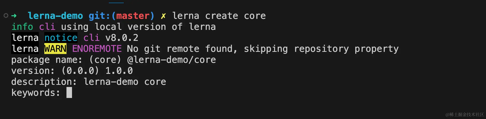

lerna
HaoTian · 2024-11-25 22:21:48
前言
lerna是一个著名的包管理器，虽然现在pnpm的monorepo火的一塌糊涂，但是我认为lerna还是相对成熟一些，毕竟@vue/cli、create-react-app、babel等都是使用lerna进行管理。同时lerna有完整的社区，至今也已经发展到8.x的版本，2024 年，还是很有必要学习和掌握这门技术的！
开始
lerna init 初始化项目
创建一个项目
cd Desktop && mkdir lerna-demo
进入项目后，使用npm项目初始化项目
cd lerna-demo
npm init -y
全局安装lerna
npm install lerna -g
使用vscode打开项目后，使用lerna初始化
lerna init
这个时候你会发现控制台报错了
网上大部分资料都是直接使用lerna init就可以初始化项目，但是新版的lerna（8.0版本）脚手架需要加上--packages的option，详情可以看官方文档
按照文档，我们再次初始化项目
lerna init --packages="packages/*"
我们会发现，lerna自动被安装到了devDependencies，同时使用git进行版本管理和创建了lerna.json配置文件
手动修改lerna.json中的版本号为1.0.0
lerna create 创建子项目
初始化项目后，使用lerna create命令来创建子项目，这里我创建一个名为core的子项目
lerna create core
需要注意的是输入package name时，不能直接输入core，因为这个包会被作为单独的npm包发布，core同名的包肯定会存在的。我们可以群组的形式创建，最终包名就是@lerna-demo/core，类似@vue/cli、@vue/composition-api
发布的前提是需要在 npm 官方中创建群组（例如：@learn-demo），这个后面会讲
上面的创建步骤完成后，子项目core的package.json就会显示完整的包名
紧接着我们可以继续创建一个util子项目
lerna create util
最终的目录结构如图
lerna list 查看子项目
使用list命令可以查看被lerna管理的子项目
lerna list
or
lerna ls
废弃的 lerna add
v7版本之前，是可以使用这个命令可以为项目安装依赖
lerna add lodash #为所有子项目安装lodash
#or
lerna add lodash --scope @lerna-demo/core #给core项目安装lodash
#or
lerna add lodash --scope @lerna-demo/core --scope @lerna-demo/util #给core和util安装lodash
但是从v7之后，这个命令就被废弃了，详情见官方文档
由于我们安装的是最新版本的v8.x，所以无法继续使用这个命令
我们如果想给项目安装依赖，使用原来的npm/yarn/pnpm即可
根据文档，我们只需要加上-w标识即可
npm install lodash -w packages/core
#or
npm install lodash -w packages/core -w packages/util
细心的同学发现，安装后虽然显示了安装成功，但是core或者util目录下都没有node_modules，它是否有正确安装了呢？
我们在core的项目中尝试使用lodash
代码正常运行，说明lodash已经安装成功了，但实际是被安装到了最外层的node_modules中。这实际也是v8版本后的改动，所有依赖都放在最外层，避免node_modules的巨型体积问题。
lerna clean 清空依赖
除了安装依赖之外，必然少不了清空依赖。
lerna clean #清空所有项目的依赖
#or
lerna clean --scope @lerna-demo/core #清空core的依赖
#or
lerna clean --scope @lerna-demo/core --scope @lerna-demo/util #清空core和util的依赖
我们先看一下core和util项目的dependencies
执行命令后，显示成功了，但是发现dependencies中依然存在。这样设计可能是因为lerna可能考虑到用户需要重新安装依赖，所以没有删除。
废弃的 lerna bootstrap
上面提到可能需要重新安装依赖，没错lerna在v7之前确实是通过bootstrap命令实现的
lerna bootstrap #重新安装所有项目的依赖
#or
lerna bootstrap --scope @lerna-demo/core #重新安装core的依赖
#or
lerna bootstrap --scope @lerna-demo/core --scope @lerna-demo/util #重新安装core和util的依赖
但是和add命令一样，这个命令也被废除了
如果需要重新安装依赖，直接使用npm/yarn/pnpm即可, 因为dependencies中依然存在被clean掉的信息，所以我们随时可以重新安装这些依赖。
废弃的 lerna link
link命令在v7版本之前被用来将子项目中相互依赖的包都在本地 link 方便本地调试，例如core中依赖了util，所以我们可以执行：
lerna link
但是这条指令在v8已经被废弃了
解决这个问题，我们直接安装对应的包名即可，lerna会为我们创建对应的软链
npm install @lerna-demo/util -w packages/core
同时，会安装到core项目的node_modules目录下
我们尝试在core项目中引入util
没有任何问题，在core中可以顺利调用util
@lerna/legacy-package-management
如果你确实很需要add、boostrap、link，或者旧版的lerna升级到了最新为了适配，可以安装@lerna/legacy-package-management来解决，这个包保留了这三个命令的使用
我们安装一下这个包：
npm install @lerna/legacy-package-management -D
试一下lerna add
lerna add axios #同时安装 axios 到 core 和 util
此时，core和util都安装了axios依赖，说明这个包又兼容了废弃的指令，这对那些升级lerna需要兼容的同学是比较友好的。另外两个命令我就不试了，感兴趣的同学可以自己尝试一下。
lerna exec 执行终端命令
使用过node的child_process命令的同学对exec这个方法应该都不陌生，lerna exec也是用来代替做同样的事情，而这个上下文正是packages目录下管理的子项目，并非是根目录，这一点需要注意
lerna exec ls #查看core和util所有文件
lerna exec --scope @lerna-demo/core -- rm -rf node_modules #删除core的node_modules
其格式是：lerna exec --scope [pkgName] -- [stream]
lerna run 执行 npm script
run命令和exec命令很像，一般使用run命令大都是执行子项目中script脚本的命令，例如一键启动项目，或者一键打包等等
lerna run dev #一键启动所有项目
#or
lerna run build --scope @lerna-demo/core #打包 core 项目
如果有指定npm/yarn/pnpm的需求，也是可以做到的，通过--npm-client即可，可选值有：npm/yarn/pnpm
lerna run test -- npm-client yarn #使用 yarn 来执行 test 脚本
发布
上述一系列操作基本都是在开发阶段时使用的，现在来讲一下发布阶段如何使用lerna进行管理。但是在使用lerna为我们发布管理之前，前提是需要将项目管理git仓库，这个是前提！
lerna diff 查看版本差异
使用这个命令的前提是需要有commit记录，拿当前改动与commit进行比较，功能和git diff一致
将之前的代码提交后，随意修改一个文件
只有有文件改动，就可以使用diff查看
lerna version 更新项目版本号
使用version命令可以更新项目版本号，目前core和util都是1.0.0版本，执行这条命令的前提是不能有文件改动（所有改动已被提交）
lerna version
此时版本号已经更新了，但是控制台报错了，原因是因为我之前把packag-lock.json加入到了.gitignore中
我们去掉packag-lock.json，同时加入lerna-debug.log，并且撤销package.json和lerna.json的修改，同时生成一条新的commit记录。
再次执行lerna version，更新版本号
命令执行成功，并且向远程仓库推送了tag版本号：1.0.1
lerna publish 发布
publish命令会将项目发布到npm中，执行这个命令，首先会执行一遍lerna version的操作，由于我们用的是@lerna-demo/xxx这种群组的形式，前提是需要在npm中创建这个群组
但是很不幸，@lerna-demo这个群组已经被创建了！（狗头），所以后面的流程就没办法演示下去了（懒得换个名字了，哈哈）。只要创建完群组之后，执行lerna publish即可，会同向远程仓库推送新的tag标签，并且会发布到npm仓库中。
其它
除了上述常见用法之外，还有一些冷门的指令，我们可以通过lerna -h查看
lerna info打印本地环境的调试信息lerna add-caching生成任务运行器配置的交互式提示符lerna changed列出自上一个带标签的版本以来已更改的本地包lerna repair运行自动迁移以修复知识库的状态lerna watch每当包或其依赖项更改时，运行命令lerna import将包导入到带有提交历史记录的monorepo中
这几个命令平时不怎么用，根据自己需要的使用即可。